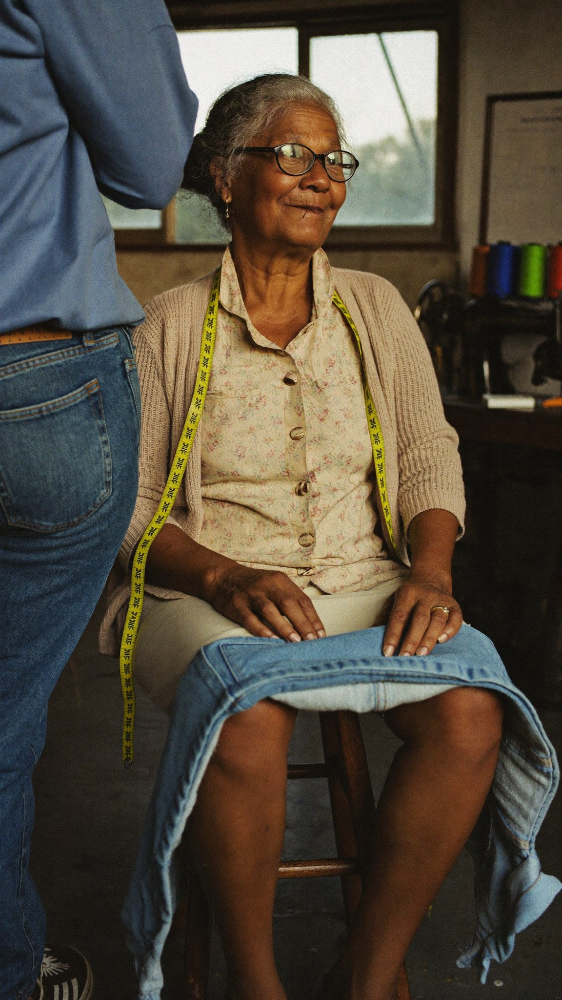

Ateliê da Cida
Deixa com a Cida.
Barra pronta no mesmo dia.
Deixe a calça de manhã e busque às 18h. A Cida já sabe a sua medida.
- BarraR$ 25
- ZíperR$ 30
- CinturaR$ 40
(11) 98765-4321
Rua Tuiuti, 88, perto da feira
Ateliê da Cida
Barra pronta no mesmo dia.
Deixe a calça de manhã e busque às 18h. A Cida já sabe a sua medida.
(11) 98765-4321
Rua Tuiuti, 88, perto da feira
